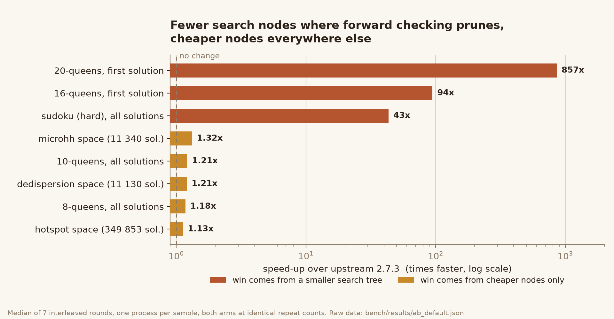
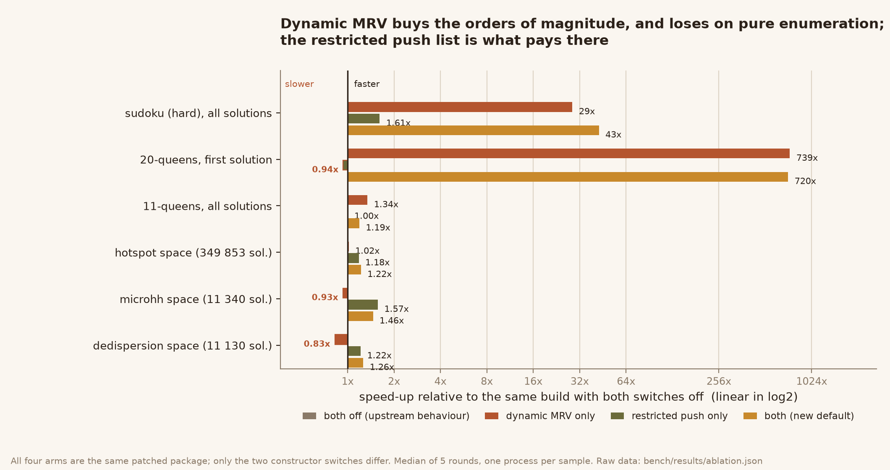

Three inefficiencies in the default solver’s search loop, measured against upstream 2.7.3 with an interleaved A/B harness. Same API, same solution sets.
The default solver, OptimizedBacktrackingSolver, is an iterative
depth-first search. Every node runs this:
# pick the next variable
lst = [(-len(vconstraints[v]), len(domains[v]), v) for v in domains]
lst.sort(key=lambda x: (x[0], x[1]))
for item in lst:
if item[-1] not in assignments: # first unassigned in that order
variable = item[-1]
values = domains[variable][:]
if forwardcheck:
pushdomains = [domains[x] for x in domains
if x not in assignments and x != variable]
breakThree things are wrong with those nine lines, and none of them is a style issue.
The list of n tuples is rebuilt and re-sorted on every node — after each failed value, not just after each assignment. Everything in it except the domain sizes is static for the whole search.
len(domains[v]) is the size at the root.
Forward checking shrinks domains as the search descends, but the heuristic never
reads them again — so “minimum remaining values” degrades into a
static tie-breaker.
Assigning one variable pushes a state onto every unassigned domain, although a constraint can only hide values in the domains of its own variables. On a sparse constraint graph that is O(V) wasted work per assignment.
The consequence is measurable rather than theoretical: on 20-queens the upstream search performs 4,902,182 constraint invocations to find one solution, because it keeps walking a stale order while some other variable has already been pruned to a single value. On the classic hard sudoku it is 1,916,096.
All of the algorithmic work is in constraint/solvers.py. A
SearchPlan is built once per solve (variable order, degrees,
constraint-neighbour table, index map); the per-node heuristic becomes a single
allocation-free scan over a taken bitmap that reads the live domain
sizes; and forward checking only pushes the domains of the current variable’s
constraint neighbours.
Both switches are on the constructor, so the old behaviour can be restored exactly:
OptimizedBacktrackingSolver(
dynamic_mrv=False,
restricted_pushdomains=False,
) # == upstream 2.7.3
| case | upstream | this build | speed-up | range over rounds | B faster in |
|---|---|---|---|---|---|
queens-20-first | 2,627.7 ms | 3.1 ms | 857× | 533.79–1605.72× | 7/7 |
queens-16-first | 103.0 ms | 1.1 ms | 94× | 77.33–114.43× | 7/7 |
sudoku-hard-all | 9,825.6 ms | 228.8 ms | 43× | 40.92–83.32× | 7/7 |
microhh-small-all | 84.5 ms | 62.9 ms | 1.32× | 1.29–1.40× | 7/7 |
queens-10-all | 235.6 ms | 196.3 ms | 1.21× | 1.15–1.31× | 7/7 |
dedispersion-all | 39.2 ms | 32.8 ms | 1.21× | 1.17–1.33× | 7/7 |
queens-8-all | 13.0 ms | 11.4 ms | 1.18× | 1.00–1.20× | 6/7 |
hotspot-all | 1,490.7 ms | 1,333.0 ms | 1.13× | 1.04–1.73× | 7/7 |
The 1.1–1.3× cases are the honest per-node cost of the old loop. The two-order-of-magnitude numbers are search-tree reduction, not micro-optimisation.
Constraint invocations are exact and machine-independent — this is the table to quote when the question is “did the algorithm get better, or did the code just get faster”.
| case | solutions | invocations upstream | invocations this build | reduction |
|---|---|---|---|---|
queens-20-first | 1 | 4,902,182 | 6,649 | 737× |
queens-16-first | 1 | 212,303 | 2,057 | 103× |
sudoku-hard-all | 1 | 1,916,096 | 54,594 | 35× |
microhh-small-all | 11,340 | 25,125 | 24,460 | 1.03× |
queens-10-all | 724 | 480,304 | 377,782 | 1.27× |
dedispersion-all | 11,130 | 17,714 | 17,714 | 1.00× |
queens-8-all | 92 | 24,582 | 21,360 | 1.15× |
hotspot-all | 349,853 | 914,440 | 853,581 | 1.07× |
dedispersion does exactly the same amount of search work (it is a pure
enumeration where the tree is already tight) and only gets faster from the removed per-node
overhead. queens-20-first does 737× less search.

| case | both off (upstream) | dynamic MRV only | restricted push only | both (new default) |
|---|---|---|---|---|
sudoku-hard-all | 1.00× | 29× | 1.61× | 43× |
queens-20-first | 1.00× | 739× | 0.94× | 720× |
queens-11-all | 1.00× | 1.34× | 1.00× | 1.19× |
hotspot-all | 1.00× | 1.02× | 1.18× | 1.22× |
microhh-small-all | 1.00× | 0.93× | 1.57× | 1.46× |
dedispersion-all | 1.00× | 0.83× | 1.22× | 1.26× |
dedispersion and 0.93× on microhh — on pure enumeration it
only costs time. And on queens-11-all the two changes partly cancel: MRV alone is
1.34×, both together 1.19×. Both are still ahead of upstream, and sudoku and
20-queens gain far more than that case loses, but it is the reason the switches are exposed
individually instead of hard-wired.test_if_compiled expects a Cython build;
test_versioning imports poetry).dedispersion, sparse graphs, unary constraints, non-string
variable keys, unsatisfiable problems and repeated solves.ruff configuration passes on the whole tree, including
bench/.ExactSumConstraint, MinSumConstraint and
MaxSumConstraint computed their initial bounds with
min(domains[v]) without checking for an empty domain. preProcess runs on
every solve and its pruning is never undone, so solving the same Problem twice
raised ValueError: min() iterable argument is empty on the second call. Fixed with
the same guard the recalculation a few lines below each site already used, plus three regression
tests.
.c artifacts were removed (generated, and no longer
matching the modified sources); the relative gain would shrink in a compiled build, since the
Python-level overhead removed here is what Cython already removes.ParallelSolver and MinConflictsSolver are untouched — the
first is documented upstream as experimental, the second is local search without forward
checking, where these changes do not apply.